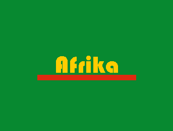
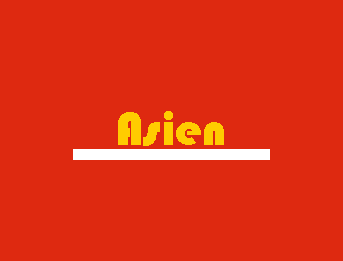
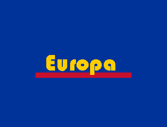

Fra Marrakech til Cape Town
Tagine, jollof, injera og bobotie.

Fra Palestina til Tokyo
Falafel, biryani, pad thai og ramen.

Fra Paris til Istanbul
Croissanter, pizza, paella og sarma.
Fra Bogotá til Patagonien
Arepas, ceviche, feijoada og empanadas.
Afrika på en tallerken
Fra Middelhavets krydderier i nord til grillmaden i syd. Afrika har over 50 lande, og her kan du smage et lille udvalg.
- Tagine · Marokko
- Couscous · Algeriet
- Shakshuka · Tunesien
- Ful medames · Egypten
- Thieboudienne · Senegal
- Suya · Nigeria
- Jollof · Nigeria
- Fufu med suppe · Ghana
- Ndolé · Cameroun
- Moambe-kylling · DR Congo
- Injera · Etiopien
- Ugali · Kenya
- Pilau · Tanzania
- Piri piri-kylling · Mozambique
- Romazava · Madagaskar
- Bobotie · Sydafrika
Find de afrikanske boder ved fufu og suppe på kortet.
Asien på en tallerken
Fra Mellemøstens krydderier til Østasiens dampende gryder. Asien er verdens største kontinent, og her kan du smage et lille udvalg.
- Musakhan · Palæstina
- Falafel · Libanon
- Mansaf · Jordan
- Kabsa · Saudi-Arabien
- Ghormeh sabzi · Iran
- Plov · Usbekistan
- Biryani · Indien
- Momo · Nepal
- Kottu roti · Sri Lanka
- Pad thai · Thailand
- Phở · Vietnam
- Adobo · Filippinerne
- Nasi goreng · Indonesien
- Dumplings · Kina
- Bibimbap · Sydkorea
- Ramen · Japan
Find de asiatiske boder ved nudelskålen på kortet.
Europa på en tallerken
Fra nordens rugbrød til Middelhavets olivenolie. Europa har mange små lande med hver deres køkken, og her kan du smage et lille udvalg.
- Smørrebrød · Danmark
- Köttbullar · Sverige
- Fish and chips · England
- Irish stew · Irland
- Croissant · Frankrig
- Pastel de nata · Portugal
- Paella · Spanien
- Pizza · Italien
- Bratwurst · Tyskland
- Wiener schnitzel · Østrig
- Pierogi · Polen
- Borsjtj · Ukraine
- Gullasch · Ungarn
- Sarma · Albanien
- Moussaka · Grækenland
- Baklava · Tyrkiet
Find de europæiske boder ved pizzaen på kortet.
Sydamerika på en tallerken
Fra Caribiens majs og frugt i nord til grillmaden i Patagonien. Sydamerika er fuld af farver og stærke smage, og her kan du smage et lille udvalg.
- Arepas · Venezuela
- Bandeja paisa · Colombia
- Ajiaco · Colombia
- Pepperpot · Guyana
- Encebollado · Ecuador
- Ceviche · Peru
- Lomo saltado · Peru
- Salteñas · Bolivia
- Feijoada · Brasilien
- Pão de queijo · Brasilien
- Sopa paraguaya · Paraguay
- Chivito · Uruguay
- Empanadas · Argentina
- Asado · Argentina
- Pastel de choclo · Chile
- Curanto · Chile
Find de sydamerikanske boder ved empanadaen på kortet.